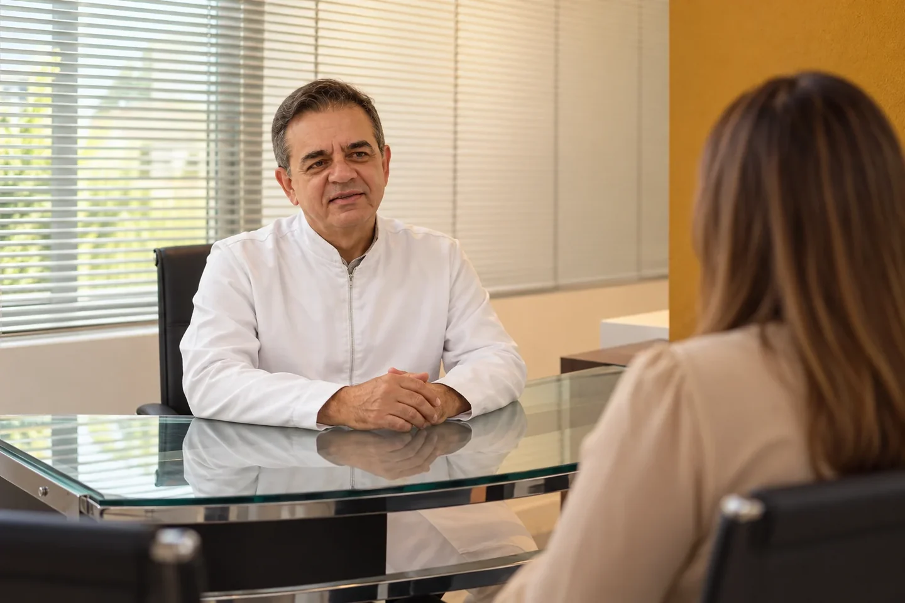
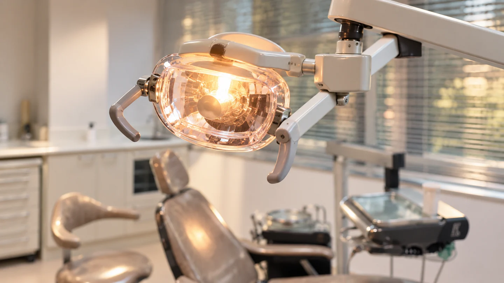
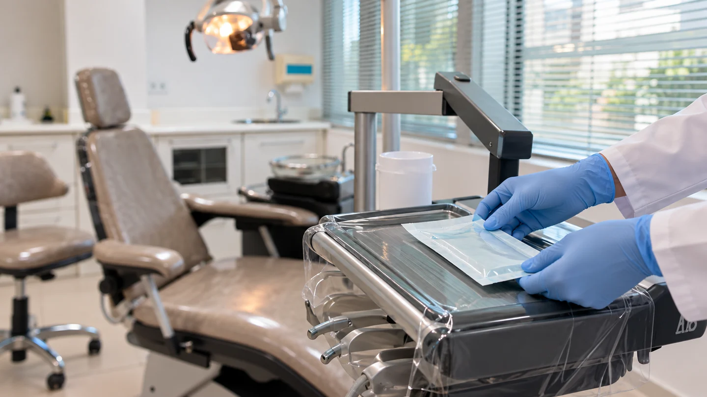

Escuta e avaliação individual
Seu histórico, suas dúvidas e suas expectativas fazem parte da primeira conversa.
A CLÍNICA E O ATENDIMENTO
Na DenteArte, a primeira consulta reúne conversa, avaliação e orientação. O Dr. Leon considera sua saúde, suas necessidades e suas expectativas antes de discutir um planejamento.
Avenida Paulista, 726, Conjunto 103 · 1º andar
Cerqueira César · São Paulo — SP

Seu histórico, suas dúvidas e suas expectativas fazem parte da primeira conversa.
As imagens e as orientações ajudam a entender o que foi observado e quais opções podem ser consideradas.
Indicação, etapas e cuidados são apresentados conforme a avaliação, com espaço para suas perguntas.
AMBIENTE E EQUIPAMENTOS
Da recepção ao consultório, conheça os ambientes antes da sua visita.
SUA CHEGADA
Vídeo sem áudioBaixar vídeo
O ATENDIMENTO
Vídeo sem áudioBaixar vídeo
UM OLHAR MAIS PRÓXIMO


PRIMEIRA CONSULTA
Atendimento particular com o Dr. Leon Daghlian.
A consulta começa com uma conversa sobre suas necessidades, seu histórico de saúde, os medicamentos em uso e suas expectativas. O exame clínico orienta a avaliação.
Imagens ampliadas dos dentes são utilizadas como recurso de apoio para observar detalhes e explicar o que foi encontrado. O profissional avalia a necessidade de outros exames; as imagens não substituem automaticamente todas as etapas do diagnóstico.
Você recebe explicações sobre as possibilidades, as etapas e o acompanhamento. Pergunte sobre alternativas, limites e cuidados antes de decidir os próximos passos.
COMO COMEÇAR
Da primeira conversa ao planejamento, você participa das decisões sobre o seu cuidado.
Entre em contato pelo WhatsApp, telefone ou e-mail. Consulte os horários e aguarde a confirmação do atendimento.
Conte suas dúvidas e seu histórico de saúde. O exame clínico e as imagens ampliadas ajudam a orientar a conversa sobre o cuidado.
Conheça os achados, as opções e as etapas propostas. Esclareça suas perguntas antes de decidir os próximos passos.
ANTES DA CONSULTA
Uma avaliação começa com informações e perguntas.
Leve informações que ajudem a compreender seu histórico. Você não precisa escolher um tratamento antes de ser avaliado.
AVALIAÇÃO E PLANEJAMENTO
As opções, as etapas e as condições de atendimento são conversadas após a avaliação. Conte o que deseja cuidar e pergunte sobre as alternativas para o seu caso.
O primeiro contato pelo site ajuda a solicitar informações. Ele não define diagnóstico, tratamento ou confirmação de horário.
Conversar sobre uma avaliaçãoSEU PRÓXIMO PASSO
Fale com a DenteArte e solicite sua avaliação particular.